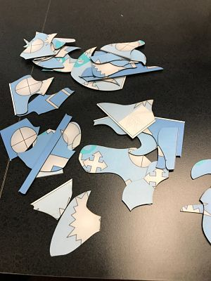
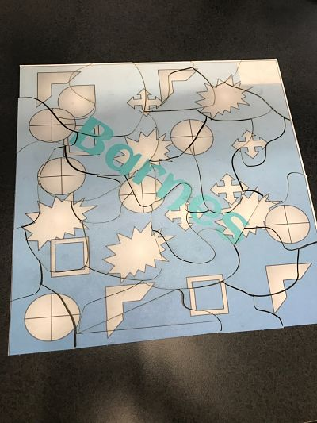
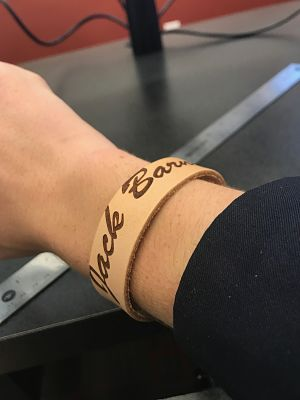
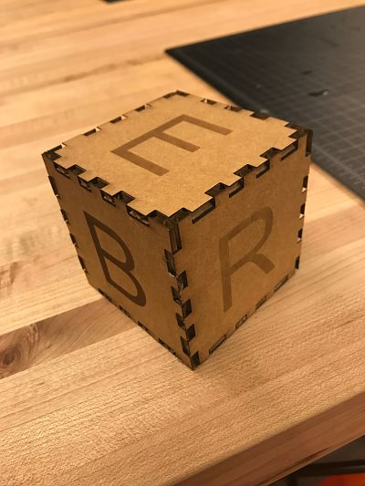
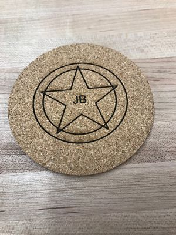
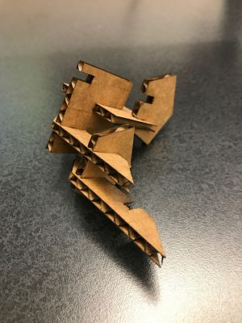
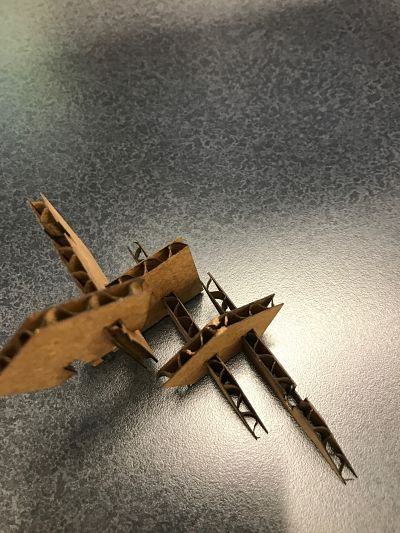
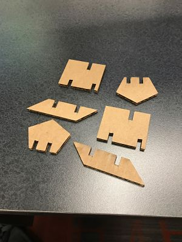

Home
Rotation 4
Laser Cutting (Vector)
This week we started by drawing a design for puzzle pieces using Correl Draw. Then, using a laser cutter, I cut the design into my previously created puzzle
I had a pretty easy time designing the cuts and the printing process was simple.
Design for vector of puzzle
 
We also worked with Rastering (engraving) using the Laser Printer. I designed a leather band to have my name engraved on it. It is pictured below

Using an online software called makercase, I designed a box that was held together with finger joints. Then, using CorelDraw, I put my last name, one letter on
each face of the box. The resulting box is shown below.

I also used the laser printer to raster a design onto a cork coaster which is shown below

Using Corel Draw, I designed pieces that fit together snugly with notches. I measured the thickness of the cardboard and made the notches that same thickness.
  